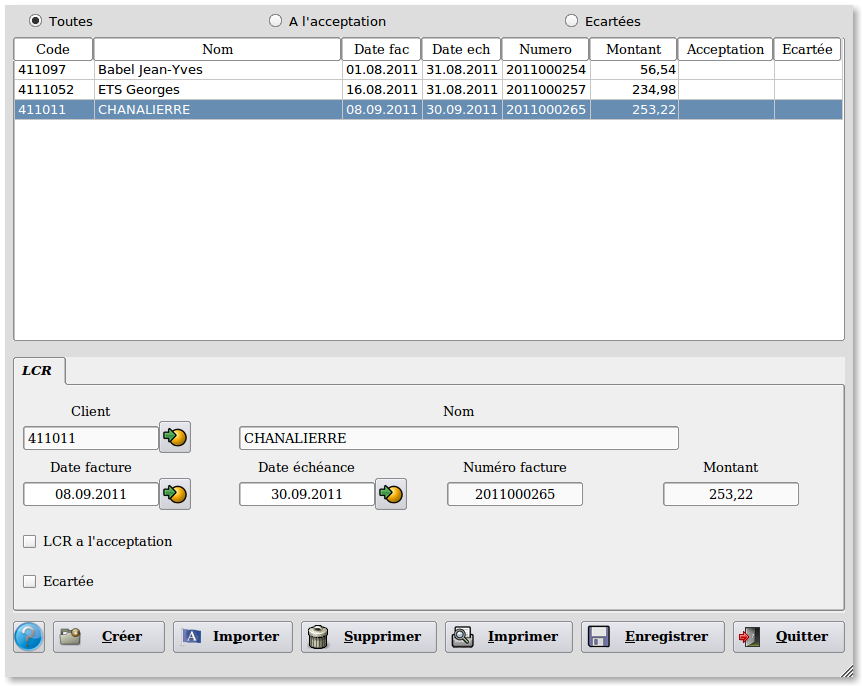

~ Laurux.LCR ~

~ Laurux.LCR ~ |
|
|
|
Traitement des LCR non attribuées.

Ce programme permet d'importer
les traites et les LCR générées par la facturation ou de créer
manuellement des LCR.
Il permet également de supprimer,
de modifier ou d'imprimer les LCR.
La partie haute du programme permet l'affichage de "Toutes" les LCR ou des LCR "A l'acceptation" ou des LCR "Ecartées".
Lorsqu'une LCR est
sélectionnée on peut modifier l'ensemble des zones, on peut aussi
modifier son statut, LCR "A l'acceptation"
ou LCR "Ecartées" .
----------------------------------------------------------------------------------------------------------------------